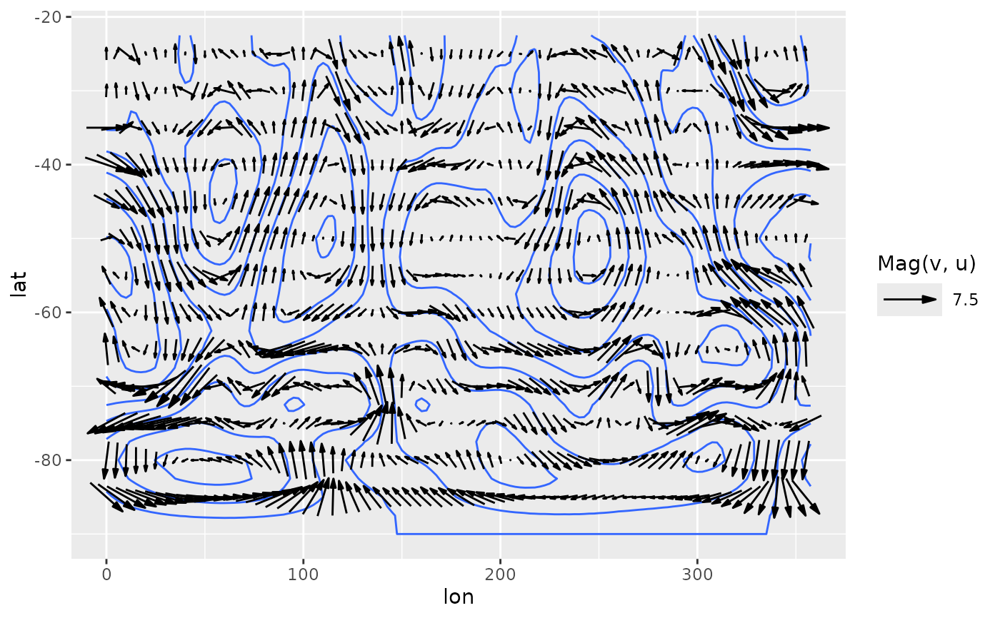
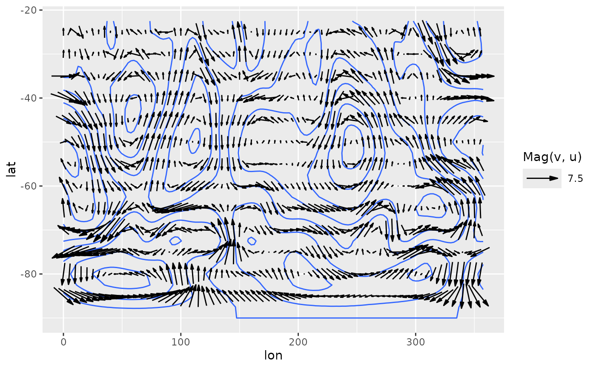
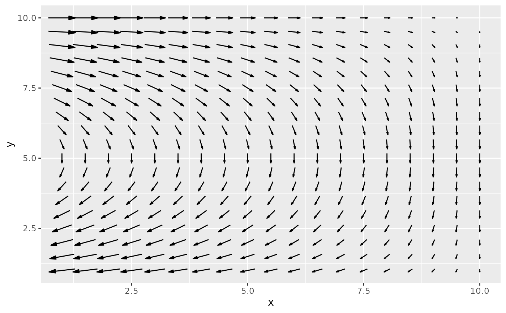
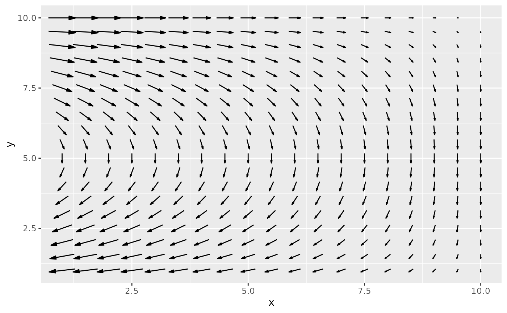

Parametrization of ggplot2::geom_segment either by location and displacement
or by magnitude and angle with default arrows. geom_arrow() is the same as
geom_vector() but defaults to preserving the direction under coordinate
transformation and different plot ratios.
Usage
geom_arrow(
mapping = NULL,
data = NULL,
stat = "arrow",
position = "identity",
...,
start = 0,
direction = c("ccw", "cw"),
pivot = 0.5,
preserve.dir = TRUE,
min.mag = 0,
skip = 0,
skip.x = skip,
skip.y = skip,
arrow.angle = 15,
arrow.length = 0.5,
arrow.ends = "last",
arrow.type = "closed",
arrow = grid::arrow(arrow.angle, grid::unit(arrow.length, "lines"), ends = arrow.ends,
type = arrow.type),
lineend = "butt",
na.rm = FALSE,
show.legend = NA,
inherit.aes = TRUE
)
geom_vector(
mapping = NULL,
data = NULL,
stat = "arrow",
position = "identity",
...,
start = 0,
direction = c("ccw", "cw"),
pivot = 0.5,
preserve.dir = FALSE,
min.mag = 0,
skip = 0,
skip.x = skip,
skip.y = skip,
arrow.angle = 15,
arrow.length = 0.5,
arrow.ends = "last",
arrow.type = "closed",
arrow = grid::arrow(arrow.angle, grid::unit(arrow.length, "lines"), ends = arrow.ends,
type = arrow.type),
lineend = "butt",
na.rm = FALSE,
show.legend = NA,
inherit.aes = TRUE
)Arguments
- mapping
Set of aesthetic mappings created by
aes(). If specified andinherit.aes = TRUE(the default), it is combined with the default mapping at the top level of the plot. You must supplymappingif there is no plot mapping.- data
The data to be displayed in this layer. There are three options:
If
NULL, the default, the data is inherited from the plot data as specified in the call toggplot().A
data.frame, or other object, will override the plot data. All objects will be fortified to produce a data frame. Seefortify()for which variables will be created.A
functionwill be called with a single argument, the plot data. The return value must be adata.frame, and will be used as the layer data. Afunctioncan be created from aformula(e.g.~ head(.x, 10)).- stat
The statistical transformation to use on the data for this layer. When using a
geom_*()function to construct a layer, thestatargument can be used to override the default coupling between geoms and stats. Thestatargument accepts the following:A
Statggproto subclass, for exampleStatCount.A string naming the stat. To give the stat as a string, strip the function name of the
stat_prefix. For example, to usestat_count(), give the stat as"count".For more information and other ways to specify the stat, see the layer stat documentation.
- position
A position adjustment to use on the data for this layer. This can be used in various ways, including to prevent overplotting and improving the display. The
positionargument accepts the following:The result of calling a position function, such as
position_jitter(). This method allows for passing extra arguments to the position.A string naming the position adjustment. To give the position as a string, strip the function name of the
position_prefix. For example, to useposition_jitter(), give the position as"jitter".For more information and other ways to specify the position, see the layer position documentation.
- ...
Other arguments passed on to
layer()'sparamsargument. These arguments broadly fall into one of 4 categories below. Notably, further arguments to thepositionargument, or aesthetics that are required can not be passed through.... Unknown arguments that are not part of the 4 categories below are ignored.Static aesthetics that are not mapped to a scale, but are at a fixed value and apply to the layer as a whole. For example,
colour = "red"orlinewidth = 3. The geom's documentation has an Aesthetics section that lists the available options. The 'required' aesthetics cannot be passed on to theparams. Please note that while passing unmapped aesthetics as vectors is technically possible, the order and required length is not guaranteed to be parallel to the input data.When constructing a layer using a
stat_*()function, the...argument can be used to pass on parameters to thegeompart of the layer. An example of this isstat_density(geom = "area", outline.type = "both"). The geom's documentation lists which parameters it can accept.Inversely, when constructing a layer using a
geom_*()function, the...argument can be used to pass on parameters to thestatpart of the layer. An example of this isgeom_area(stat = "density", adjust = 0.5). The stat's documentation lists which parameters it can accept.The
key_glyphargument oflayer()may also be passed on through.... This can be one of the functions described as key glyphs, to change the display of the layer in the legend.
- start
starting angle for rotation in degrees
- direction
direction of rotation (counter-clockwise or clockwise)
- pivot
numeric indicating where to pivot the arrow where 0 means at the beginning and 1 means at the end.
- preserve.dir
logical indicating whether to preserve direction or not
- min.mag
minimum magnitude for plotting vectors
- skip, skip.x, skip.y
numeric specifying number of gridpoints not to draw in the x and y direction
- arrow.length, arrow.angle, arrow.ends, arrow.type
parameters passed to grid::arrow
- arrow
specification for arrow heads, as created by
grid::arrow().- lineend
Line end style (round, butt, square).
- na.rm
If
FALSE, the default, missing values are removed with a warning. IfTRUE, missing values are silently removed.- show.legend
logical. Should this layer be included in the legends?
NA, the default, includes if any aesthetics are mapped.FALSEnever includes, andTRUEalways includes. It can also be a named logical vector to finely select the aesthetics to display. To include legend keys for all levels, even when no data exists, useTRUE. IfNA, all levels are shown in legend, but unobserved levels are omitted.- inherit.aes
If
FALSE, overrides the default aesthetics, rather than combining with them. This is most useful for helper functions that define both data and aesthetics and shouldn't inherit behaviour from the default plot specification, e.g.annotation_borders().
Details
Direction and start allows to work with different standards. For the
meteorological standard, for example, use star = -90 and direction = "cw".
Aesthetics
geom_vector understands the following aesthetics (required aesthetics are in bold)
x
y
either mag and angle, or dx and dy
alphacolourlinetypesizelineend
Examples
library(data.table)
library(ggplot2)
data(seals)
# If the velocity components are in the same units as the axis,
# geom_vector() (or geom_arrow(preserve.dir = TRUE)) might be a better option
ggplot(seals, aes(long, lat)) +
geom_arrow(aes(dx = delta_long, dy = delta_lat), skip = 1, color = "red") +
geom_vector(aes(dx = delta_long, dy = delta_lat), skip = 1) +
scale_mag()
 data(geopotential)
geopotential <- copy(geopotential)[date == date[1]]
geopotential[, gh.z := Anomaly(gh), by = .(lat)]
#> lon lat lev gh date gh.z
#> <num> <num> <int> <num> <Date> <num>
#> 1: 0.0 -22.5 700 3163.839 1990-01-01 13.67219
#> 2: 2.5 -22.5 700 3162.516 1990-01-01 12.34968
#> 3: 5.0 -22.5 700 3162.226 1990-01-01 12.05939
#> 4: 7.5 -22.5 700 3162.323 1990-01-01 12.15607
#> 5: 10.0 -22.5 700 3163.097 1990-01-01 12.93024
#> ---
#> 4028: 347.5 -90.0 700 2715.936 1990-01-01 0.00000
#> 4029: 350.0 -90.0 700 2715.936 1990-01-01 0.00000
#> 4030: 352.5 -90.0 700 2715.936 1990-01-01 0.00000
#> 4031: 355.0 -90.0 700 2715.936 1990-01-01 0.00000
#> 4032: 357.5 -90.0 700 2715.936 1990-01-01 0.00000
geopotential[, c("u", "v") := GeostrophicWind(gh.z, lon, lat)]
#> lon lat lev gh date gh.z u v
#> <num> <num> <int> <num> <Date> <num> <num> <num>
#> 1: 0.0 -22.5 700 3163.839 1990-01-01 13.67219 NA 1.08181190
#> 2: 2.5 -22.5 700 3162.516 1990-01-01 12.34968 NA 0.55189199
#> 3: 5.0 -22.5 700 3162.226 1990-01-01 12.05939 NA 0.06625043
#> 4: 7.5 -22.5 700 3162.323 1990-01-01 12.15607 NA -0.29800162
#> 5: 10.0 -22.5 700 3163.097 1990-01-01 12.93024 NA -0.75064329
#> ---
#> 4028: 347.5 -90.0 700 2715.936 1990-01-01 0.00000 NA 0.00000000
#> 4029: 350.0 -90.0 700 2715.936 1990-01-01 0.00000 NA 0.00000000
#> 4030: 352.5 -90.0 700 2715.936 1990-01-01 0.00000 NA 0.00000000
#> 4031: 355.0 -90.0 700 2715.936 1990-01-01 0.00000 NA 0.00000000
#> 4032: 357.5 -90.0 700 2715.936 1990-01-01 0.00000 NA 0.00000000
(g <- ggplot(geopotential, aes(lon, lat)) +
geom_arrow(aes(dx = dlon(u, lat), dy = dlat(v)), skip.x = 3, skip.y = 2,
color = "red") +
geom_vector(aes(dx = dlon(u, lat), dy = dlat(v)), skip.x = 3, skip.y = 2) +
scale_mag( guide = "none"))
data(geopotential)
geopotential <- copy(geopotential)[date == date[1]]
geopotential[, gh.z := Anomaly(gh), by = .(lat)]
#> lon lat lev gh date gh.z
#> <num> <num> <int> <num> <Date> <num>
#> 1: 0.0 -22.5 700 3163.839 1990-01-01 13.67219
#> 2: 2.5 -22.5 700 3162.516 1990-01-01 12.34968
#> 3: 5.0 -22.5 700 3162.226 1990-01-01 12.05939
#> 4: 7.5 -22.5 700 3162.323 1990-01-01 12.15607
#> 5: 10.0 -22.5 700 3163.097 1990-01-01 12.93024
#> ---
#> 4028: 347.5 -90.0 700 2715.936 1990-01-01 0.00000
#> 4029: 350.0 -90.0 700 2715.936 1990-01-01 0.00000
#> 4030: 352.5 -90.0 700 2715.936 1990-01-01 0.00000
#> 4031: 355.0 -90.0 700 2715.936 1990-01-01 0.00000
#> 4032: 357.5 -90.0 700 2715.936 1990-01-01 0.00000
geopotential[, c("u", "v") := GeostrophicWind(gh.z, lon, lat)]
#> lon lat lev gh date gh.z u v
#> <num> <num> <int> <num> <Date> <num> <num> <num>
#> 1: 0.0 -22.5 700 3163.839 1990-01-01 13.67219 NA 1.08181190
#> 2: 2.5 -22.5 700 3162.516 1990-01-01 12.34968 NA 0.55189199
#> 3: 5.0 -22.5 700 3162.226 1990-01-01 12.05939 NA 0.06625043
#> 4: 7.5 -22.5 700 3162.323 1990-01-01 12.15607 NA -0.29800162
#> 5: 10.0 -22.5 700 3163.097 1990-01-01 12.93024 NA -0.75064329
#> ---
#> 4028: 347.5 -90.0 700 2715.936 1990-01-01 0.00000 NA 0.00000000
#> 4029: 350.0 -90.0 700 2715.936 1990-01-01 0.00000 NA 0.00000000
#> 4030: 352.5 -90.0 700 2715.936 1990-01-01 0.00000 NA 0.00000000
#> 4031: 355.0 -90.0 700 2715.936 1990-01-01 0.00000 NA 0.00000000
#> 4032: 357.5 -90.0 700 2715.936 1990-01-01 0.00000 NA 0.00000000
(g <- ggplot(geopotential, aes(lon, lat)) +
geom_arrow(aes(dx = dlon(u, lat), dy = dlat(v)), skip.x = 3, skip.y = 2,
color = "red") +
geom_vector(aes(dx = dlon(u, lat), dy = dlat(v)), skip.x = 3, skip.y = 2) +
scale_mag( guide = "none"))
 # A dramatic illustration of the difference between arrow and vector
g + coord_polar()
# A dramatic illustration of the difference between arrow and vector
g + coord_polar()
 # When plotting winds in a lat-lon grid, a good way to have both
# the correct direction and an interpretable magnitude is to define
# the angle by the longitud and latitude displacement and the magnitude
# by the wind velocity. That way arrows are always parallel to streamlines
# and their magnitude are in the correct units.
ggplot(geopotential, aes(lon, lat)) +
geom_contour(aes(z = gh.z)) +
geom_vector(aes(angle = atan2(dlat(v), dlon(u, lat))*180/pi,
mag = Mag(v, u)), skip = 1, pivot = 0.5) +
scale_mag()

# Sverdrup transport
library(data.table)
b <- 10
d <- 10
grid <- as.data.table(expand.grid(x = seq(1, d, by = 0.5),
y = seq(1, b, by = 0.5)))
grid[, My := -sin(pi*y/b)*pi/b]
#> x y My
#> <num> <num> <num>
#> 1: 1.0 1 -9.708055e-02
#> 2: 1.5 1 -9.708055e-02
#> 3: 2.0 1 -9.708055e-02
#> 4: 2.5 1 -9.708055e-02
#> 5: 3.0 1 -9.708055e-02
#> ---
#> 357: 8.0 10 -3.847341e-17
#> 358: 8.5 10 -3.847341e-17
#> 359: 9.0 10 -3.847341e-17
#> 360: 9.5 10 -3.847341e-17
#> 361: 10.0 10 -3.847341e-17
grid[, Mx := -pi^2/b^2*cos(pi*y/b)*(d - x)]
#> x y My Mx
#> <num> <num> <num> <num>
#> 1: 1.0 1 -9.708055e-02 -0.84478964
#> 2: 1.5 1 -9.708055e-02 -0.79785688
#> 3: 2.0 1 -9.708055e-02 -0.75092413
#> 4: 2.5 1 -9.708055e-02 -0.70399137
#> 5: 3.0 1 -9.708055e-02 -0.65705861
#> ---
#> 357: 8.0 10 -3.847341e-17 0.19739209
#> 358: 8.5 10 -3.847341e-17 0.14804407
#> 359: 9.0 10 -3.847341e-17 0.09869604
#> 360: 9.5 10 -3.847341e-17 0.04934802
#> 361: 10.0 10 -3.847341e-17 0.00000000
ggplot(grid, aes(x, y)) +
geom_arrow(aes(dx = Mx, dy = My))
# When plotting winds in a lat-lon grid, a good way to have both
# the correct direction and an interpretable magnitude is to define
# the angle by the longitud and latitude displacement and the magnitude
# by the wind velocity. That way arrows are always parallel to streamlines
# and their magnitude are in the correct units.
ggplot(geopotential, aes(lon, lat)) +
geom_contour(aes(z = gh.z)) +
geom_vector(aes(angle = atan2(dlat(v), dlon(u, lat))*180/pi,
mag = Mag(v, u)), skip = 1, pivot = 0.5) +
scale_mag()

# Sverdrup transport
library(data.table)
b <- 10
d <- 10
grid <- as.data.table(expand.grid(x = seq(1, d, by = 0.5),
y = seq(1, b, by = 0.5)))
grid[, My := -sin(pi*y/b)*pi/b]
#> x y My
#> <num> <num> <num>
#> 1: 1.0 1 -9.708055e-02
#> 2: 1.5 1 -9.708055e-02
#> 3: 2.0 1 -9.708055e-02
#> 4: 2.5 1 -9.708055e-02
#> 5: 3.0 1 -9.708055e-02
#> ---
#> 357: 8.0 10 -3.847341e-17
#> 358: 8.5 10 -3.847341e-17
#> 359: 9.0 10 -3.847341e-17
#> 360: 9.5 10 -3.847341e-17
#> 361: 10.0 10 -3.847341e-17
grid[, Mx := -pi^2/b^2*cos(pi*y/b)*(d - x)]
#> x y My Mx
#> <num> <num> <num> <num>
#> 1: 1.0 1 -9.708055e-02 -0.84478964
#> 2: 1.5 1 -9.708055e-02 -0.79785688
#> 3: 2.0 1 -9.708055e-02 -0.75092413
#> 4: 2.5 1 -9.708055e-02 -0.70399137
#> 5: 3.0 1 -9.708055e-02 -0.65705861
#> ---
#> 357: 8.0 10 -3.847341e-17 0.19739209
#> 358: 8.5 10 -3.847341e-17 0.14804407
#> 359: 9.0 10 -3.847341e-17 0.09869604
#> 360: 9.5 10 -3.847341e-17 0.04934802
#> 361: 10.0 10 -3.847341e-17 0.00000000
ggplot(grid, aes(x, y)) +
geom_arrow(aes(dx = Mx, dy = My))
 # Due to limitations in ggplot2 (see: https://github.com/tidyverse/ggplot2/issues/4291),
# if you define the vector with the dx and dy aesthetics, you need
# to explicitly add scale_mag() in order to show the arrow legend.
ggplot(grid, aes(x, y)) +
geom_arrow(aes(dx = Mx, dy = My)) +
scale_mag()

# Alternative, use Mag and Angle.
ggplot(grid, aes(x, y)) +
geom_arrow(aes(mag = Mag(Mx, My), angle = Angle(Mx, My)))
# Due to limitations in ggplot2 (see: https://github.com/tidyverse/ggplot2/issues/4291),
# if you define the vector with the dx and dy aesthetics, you need
# to explicitly add scale_mag() in order to show the arrow legend.
ggplot(grid, aes(x, y)) +
geom_arrow(aes(dx = Mx, dy = My)) +
scale_mag()

# Alternative, use Mag and Angle.
ggplot(grid, aes(x, y)) +
geom_arrow(aes(mag = Mag(Mx, My), angle = Angle(Mx, My)))